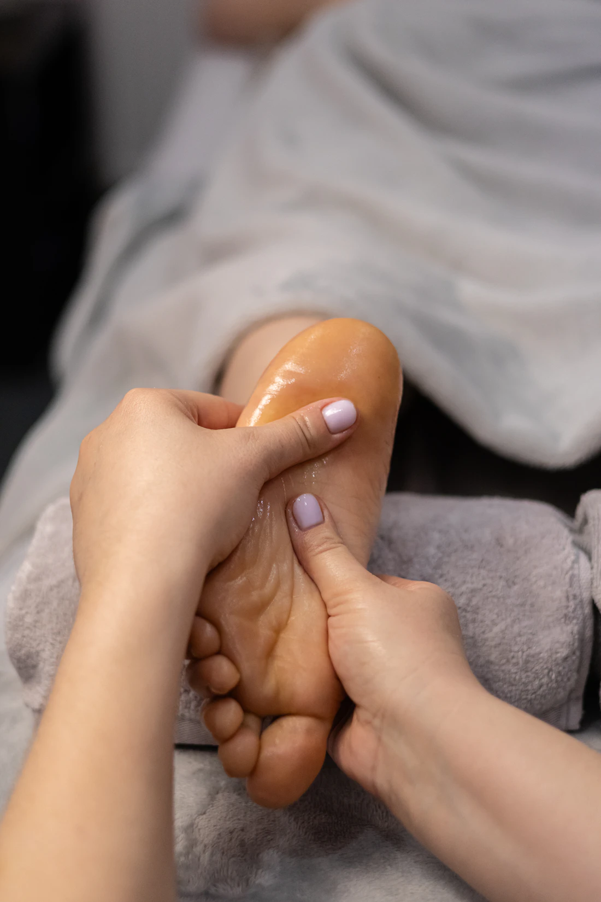
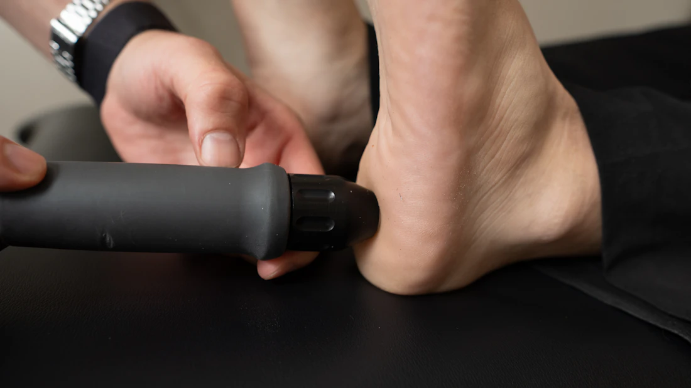
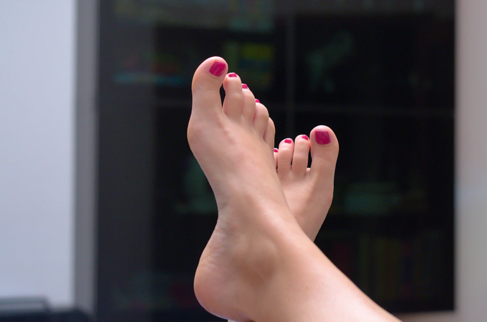
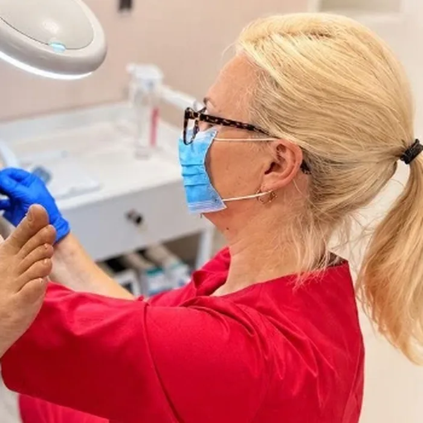

Oksana soigne vos pieds avec précision et douceur : soins médicaux, ongles, cors, crevasses et pédicure esthétique. À domicile et en déplacement, des Bons Villers à Charleroi.
Prenez soin de vos pieds avec Oksana

Choisissez ce qui vous concerne pour voir en quoi consiste le soin.
Un soin des pieds touche à la santé. Oksana y applique les mêmes règles à chaque rendez-vous.
Gants, masque et plan de travail désinfecté : chaque soin commence dans un espace propre.
Des instruments professionnels, stérilisés entre chaque personne.
Le temps d'écouter ce qui vous gêne, d'expliquer le soin et de vous mettre à l'aise.
Votre commune n'est pas dans la liste ? Appelez, Oksana vous dira si elle peut venir.

Oksana vous reçoit sur rendez-vous, dans un espace de soin équipé : fauteuil, lampe loupe et matériel professionnel.

Vous ne pouvez pas ou ne souhaitez pas vous déplacer ? Elle vient chez vous avec son matériel.

Santé, confort, bien-être.Oksana, pédicure spécialisée
Des pieds douloureux gâchent vite une journée. Oksana soigne ce qui fait mal, entretient ce qui va bien et prend le temps de vous expliquer ses gestes.
Soin médical ou pédicure esthétique, le niveau d'exigence reste le même : propreté, précision et douceur.
Oksana
Par téléphone au 0470 123 456, par e-mail ou avec le formulaire ci-dessous. Oksana vous propose un moment qui vous arrange.
Oui, aux Bons Villers, à Nivelles, Gosselies, Charleroi et dans les environs. Indiquez votre commune lors de l'appel.
Un fauteuil ou une chaise confortable et un endroit bien éclairé. Oksana apporte son matériel.
Décrivez simplement ce qui vous gêne. Oksana vous oriente vers le soin adapté et vous annonce le tarif avant le rendez-vous.
Sur rendez-vous, à domicile et en déplacement. Si Oksana est en soin, laissez un message : elle vous rappelle.